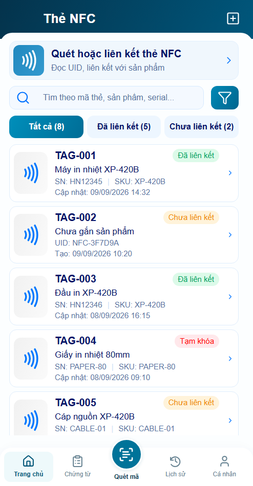
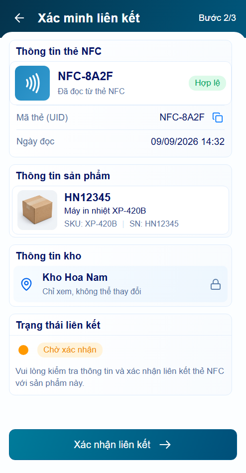
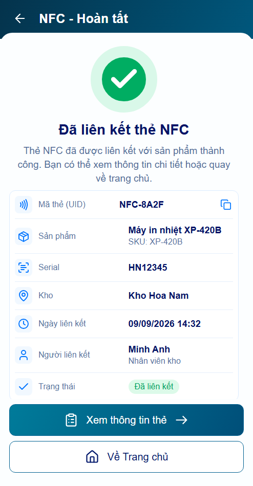
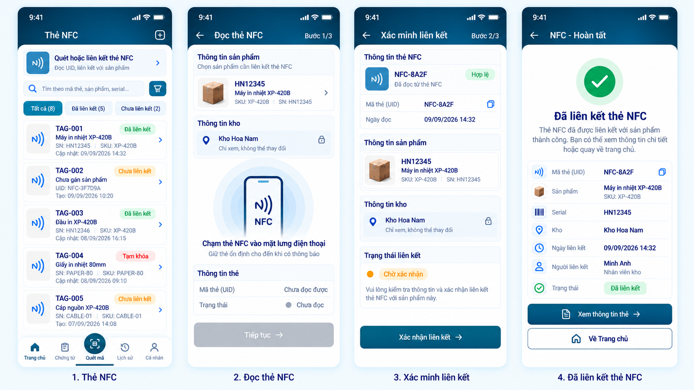

Chỉ dùng để review bố cục. B07 có tỷ lệ khác shell494×950 đã chốt; crop loại status bar/caption theo ước lượng. Giữ nguyên kích thước native, không kéo méo, không đặt ngưỡng pixel PASS. Font Arial, icon repo và hộp demo khác tài nguyên Designer. Nội dung dài cuộn trong app.



B07 native crop — estimated, 373×826

Actual shell494×950 — no resize
B07 native crop — estimated, 367×826
Actual shell494×950 — no resize
B07 native crop — estimated, 368×826
Actual shell494×950 — no resize
B07 native crop — estimated, 374×826
Actual shell494×950 — no resize